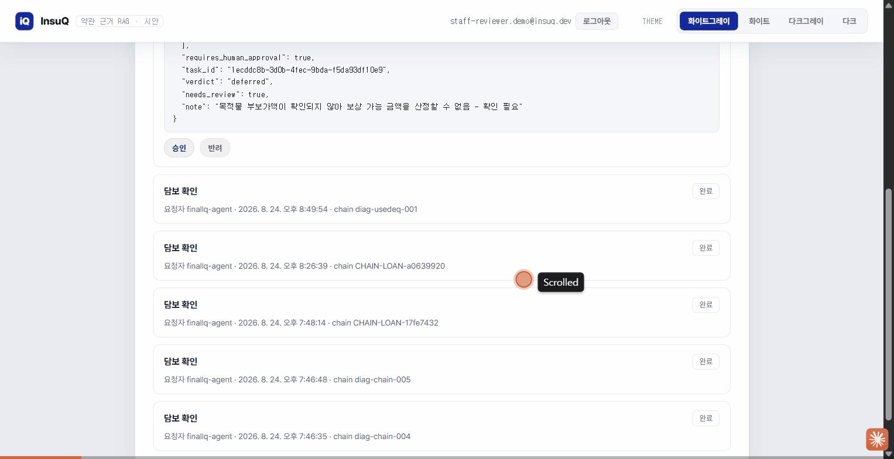
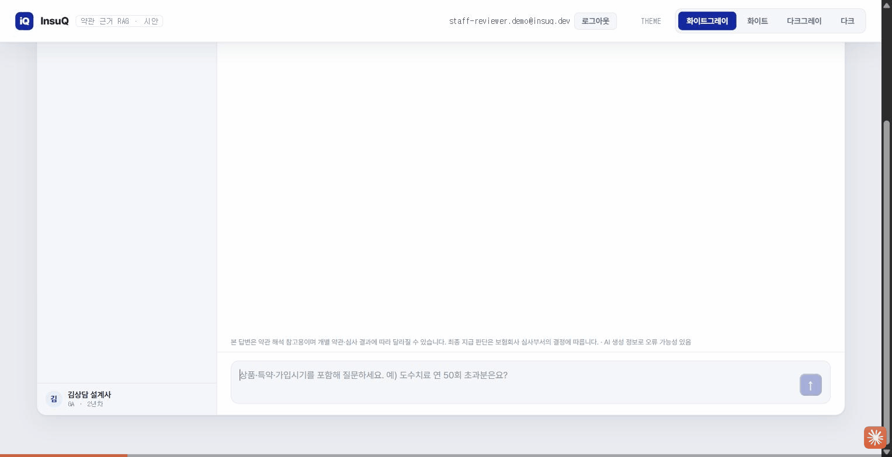
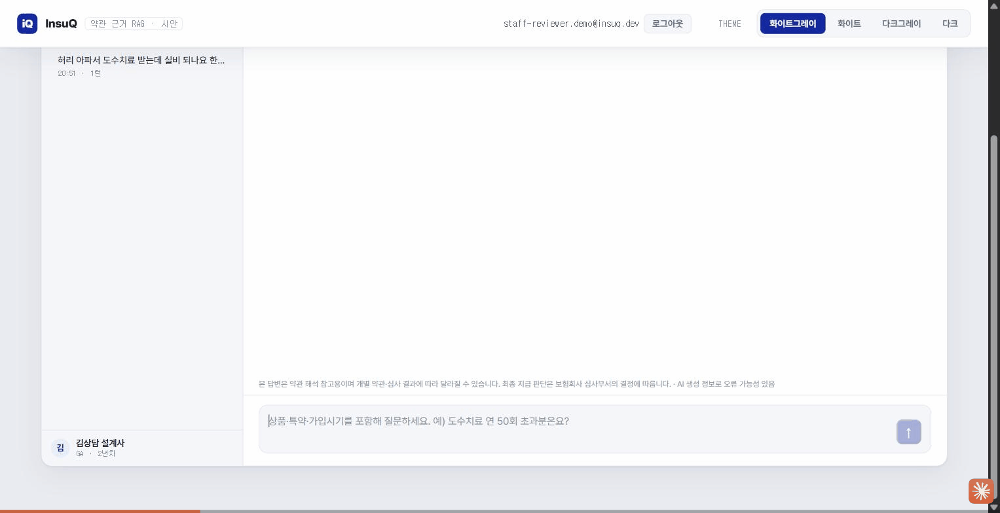

RAG 기반 보험약관 Q&A 에이전트 - 기술 선택, 성능 측정, 개선 로드맵
분석 기간: Sprint 6 ~ Sprint 12 (2026-07-20 ~ 2026-08-20) | 평가 데이터: 46개 실험
RAG 기반 보험약관 Q&A 에이전트 — 설계사가 고객 앞에서 30초 안에 약관 근거를 찾아주는 도구
| 사용자 | 상황 | 필요한 것 |
|---|---|---|
| 설계사/GA (주 사용자) | 고객 상담 중 약관 검색 필요 | 30초 안에 근거 조항 3~5개 |
| 개인 가입자 | 내 보장 범위 확인 | 표준 약관 vs 내 특약 비교 |
A2A(Agent-to-Agent) 응답자 역할 — 5개 스킬로 대출심사·청구 판정 시 근거 제공. 2026-08-23(Sprint 13) 갱신: 5개 중 4개 구현 완료, backend(Spring, 8081) 실동작:
requires_human_approval:true 하드 리터럴, 승인 큐 backend까지 E2E 검증(실제 스크립트)verify-collateral-insurance의 effective_recovery 필드(지금까지 항상 null)를 claim-insurance의 비례보상 공식(손해액 × coverage_amount / (insured_value × coinsurance_ratio))으로 산정하도록 구현 완료. 인덱서의 recreate: false 증분 인덱싱 검증 로직 버그(완전일치 비교 → 부분집합 비교)를 발견·수정했고, 트랙4(화재보험) 4개 상품(주택화재보험·성공예감·비즈앤안전파트너·아파트안심보험) 증분 인덱싱으로 insuq_track4 컬렉션이 2,214 → 6,505 포인트가 됨. 테스트: backend 398 → 423건(+25) · ai-engine 875 → 904건(+29) · frontend vitest 77 → 114건(+37), 전부 0 failures. 최신 출처: InsuQ 레포 docs/status_audit.html·docs/status.html(main 커밋 af22794).
🎬 실측 캡처(2026-08-24) — claim-insurance(S15)의 requires_human_approval:true 승인 게이트를 /pro/inbox에서 실제로 처리하는 화면. curl로 실 스킬을 호출해 판정 deferred(손해액은 있으나 목적물 부보가액 미확인 — 근거 없이 단정하지 않고 유보)로 input-required Task를 생성한 뒤, 심사역 계정으로 로그인해 승인 확인 코멘트(전자서명)를 남기고 승인 확정 → Task가 완료로 전이되는 것까지 라이브 캡처.

| 저장소 | 내용 | 소유자 | 접근 방식 |
|---|---|---|---|
| Qdrant + data/ | 약관 청크·골든셋 | ai-engine | 인덱싱 API 호출 |
| RDB (계약, 사용자) | 사용자·상담이력·계약 | backend(Spring) | ai-engine은 접근 안 함 |
실손의료보험 30문항 골든셋 기준
| 지표 | 값 | 비고 |
|---|---|---|
| Hit@5 (strict) | 0.5833 | 엄격한 정의 (첫 문항만) |
| 레이턴시 p95 | 0.5838s | 검색 단계만 (생성 제외) |
| 난이도별 Hit@5 | easy 0.857 / medium 0.846 / hard 0.750 | 어려운 문항일수록 낮음 |
| 지표 | tools_off | tools_on | 개선 |
|---|---|---|---|
| 오거부율 (답변 가능한데 거부) | 30% | 20% | ↓ 10%p |
| 근거 건수 | 5.0건 | 8.4건 | ↑ |
| 레이턴시 | 11.4s / 18.5s | 15.7s / 23.8s | ↑ 예산 축소 |
| 도구 사용률 | 0% | 83% | 높음 |
| 설정 | Hit@1 | Hit@5 | p95 레이턴시 | 판정 |
|---|---|---|---|---|
| Vector Only (baseline) | 0.3333 | 0.8333 | 0.622s | 기준 |
| Hybrid (BM25+RRF) | 0.2917 | 0.7917 | 0.587s | 기각 |
| + Rerank (bge-reranker) | 0.4167 | 0.8750 | 98.195s 🚨 | 기각 |
| + Rerank (mmarco) | 0.3333 | 0.7500 | 4.270s | 기각 |
| 모델 | 거부 정확도 | 단정 위반 | p95 | 게이트 |
|---|---|---|---|---|
| NVIDIA nemotron | 12/12 | 1/24 | 44.7s 🚨 | FAIL |
| Gemini 3.5 Flash | 12/12 | 0/24 | 10.4s | PASS |
"보험 오답의 금전 피해가 크므로, 환각 방지가 최우선"
LLM 호출 전에 확보할 수 있는 수비는 모두 가동. 근거 확보 단계에서 이미 90% 이상 필터링 가능.
| 항목 | 결과 | 목표 | 상태 |
|---|---|---|---|
| 거부 정확도 (거부해야 할 때 거부) | 100% | ≥90% | ✅ 달성 |
| 오거부율 (답변 가능한데 거부) | ~5% (도구 최적화) | < 5% | ⏳ 경계 |
| 비결정성 (반복 실행 시 다른 답변) | 조사 중 | 0건 | ⏳ 미해결 |
🎬 실측 캡처(2026-08-25 갱신) — 방어선 ①·②가 실제 화면에서 어떻게 갈리는지 두 세션으로 캡처. 위: "허리 아파서 도수치료 받는데 실비 되나요 한도 있나요" → 근거 조항 인용(파트명·조·항·페이지 전부 포함) + "지급 사유에 해당할 가능성 높음" 3단계 판정, 근거 카드를 하나씩 펼쳐 원문 조항 전체와 하이라이트된 핵심 문구까지 확인하는 과정 포함. 아래: "손해위로금도 별도로 받을 수 있나요" → 코퍼스에 근거 조항이 없어 즉시 "약관에서 확인 불가" + "확인 필요·고객에게 물어보세요"로 거부(단정 없음).


| 항목 | 규모 | 상태 |
|---|---|---|
| Part 1 (실손의료) | 30문항 | ✅ 완료 (난이도 분류) |
| Part 2 (화재·재물) | 20문항 | ⏳ 사람 검수 대기 |
| 난이도 분류 | easy / medium / hard | ✅ 완료 |
| 상품 | 청크 수 (자식) | 상위 조 (부모) | 상태 |
|---|---|---|---|
| 실손의료보험 | 610개 | 117개 | ✅ 완료 |
| 화재·재물보험 (3개사) | 2,214개 | 자사/타사 혼재 | ⏳ 트랙 2 준비 중 |
| 단계 | 추정 | 실측 | 격차 | 원인 |
|---|---|---|---|---|
| 질의 임베딩 | 0.5s | 2.765s (p95) | 5.5배 | API 왕복 시간이 벡터 연산 압도 |
| Qdrant 검색 | 0.1s | 0.004s (p95) | 25배 빠름 | 인덱싱 효율 |
| 레이턴시 예산 영향 | 3.7s | 21.3s | 수정 | D17 `latency.reserve_s`: 12s → 14s 상향 |
"작게 검색하고 크게 답한다"
| 레벨 | 용도 | 근거 |
|---|---|---|
| 자식(항) | BM25·벡터 인덱싱, RRF, 리랭킹 | 정밀한 검색·순위 조정 가능 |
| 부모(조) | 생성 직전에만 확장 | 컨텍스트 충분, 환각 방지 |
"항상 응답자" — 다른 도메인에 요청을 보내지 않음
| 스킬 ID | 시나리오 | 역할 | 근거 필수 | 구현 상태 |
|---|---|---|---|---|
verify-collateral-insurance |
S8, S13 | 담보보험 검증 | ✅ | ✅ 완료 |
advise-policy-renewal |
S7 | 갱신 상담 | ✅ | ✅ 완료 |
notify-asset-change |
S11 | 목적물 변경 | ✅ | ✅ 완료 (Sprint 13) |
notify-risk-change |
S14 | 위험등급 변동 | ✅ | ✅ 완료 (Sprint 14). 2026-08-24 갱신: Sprint 14 스코핑 완료 후 구현 완료, main 병합(커밋 687d616), 실제 컨테이너 A2A 헤더 규약으로 6개 경로 실측 검증까지 완료 |
claim-insurance |
S15 | 보험금 청구 | ✅ | ✅ 완료 (Sprint 13) — 승인 큐 backend E2E 검증 |
lookup-clause |
제안 | 약관 근거 조회 | ✅ | ✅ 완료 — a2a_adapter(FastAPI, :9102) |
status: "rejected", rejection_reason: "no_evidence_found|citation_unverified"HTTP 200 (거부는 정상 동작, 4xx/5xx 아님)
| 체크포인트 | 상태 | 의미 |
|---|---|---|
| Baseline 확정 | ✅ 완료 | Hit@5 0.8333 기준선 확립 |
| TASK-301 리랭커 | ⏳ 진행 중 (기각) | 성능 입증 실패로 현재 기각 상태 |
| 답변정확도·거부정확도 | ⏳ 측정 대기 | 골든셋 확대(Part 2) 후 측정 |
| 새 트랙(2·3) 착수 | ⏸️ 보류 | 위 측정 백본 완료까지 연기 |
| 항목 | 현재 | 목표 | 상태 |
|---|---|---|---|
| Hit@5 (검색) | 0.8333 | ≥0.85 | 미달 (0.0167p) |
| 검색 p95 | 0.584s | ≤30s | ✅ 통과 |
| 생성 p95 | 10.4s | ≤30s | ✅ 통과 |
| 거부 정확도 | 100% | ≥90% | ✅ 통과 |